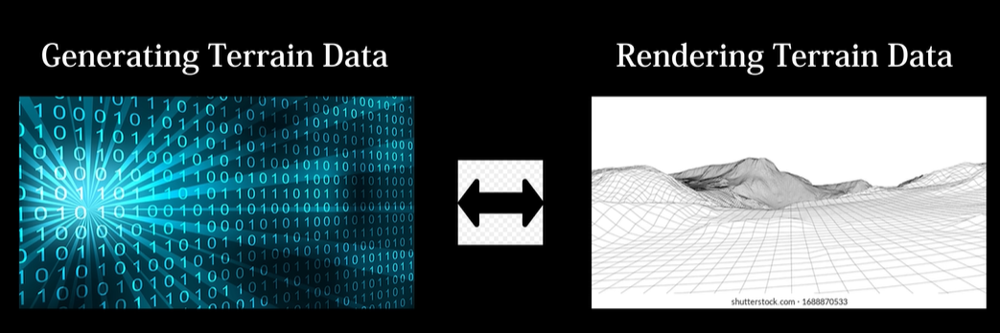
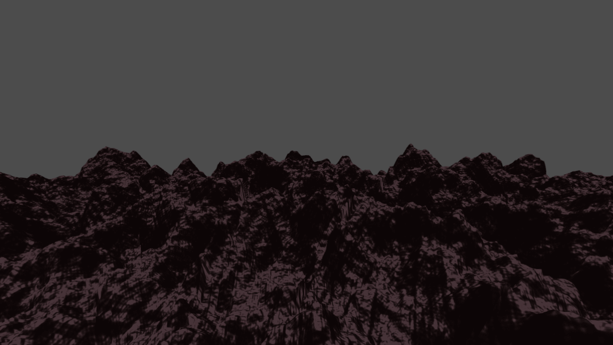
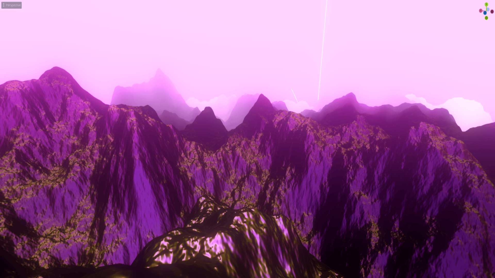
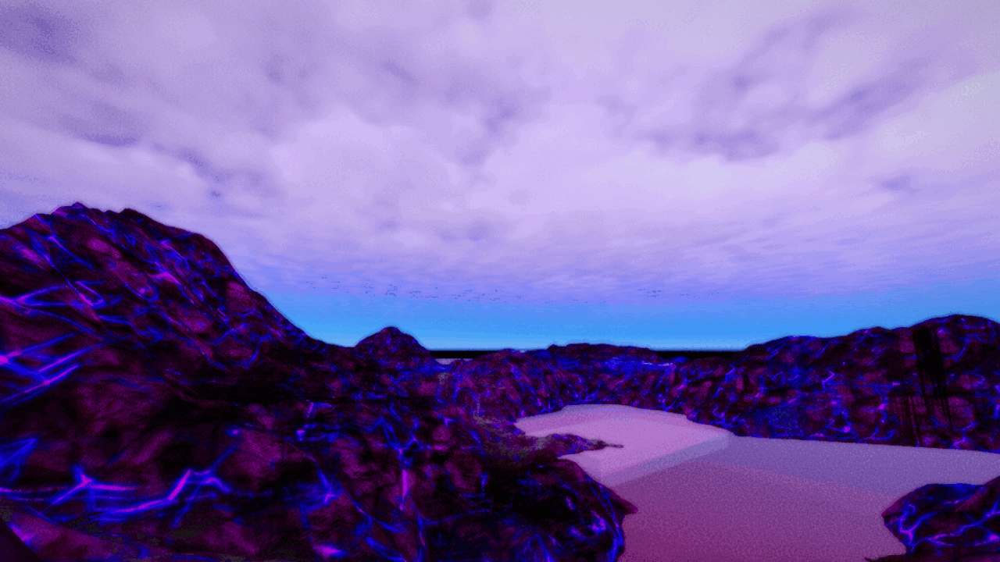
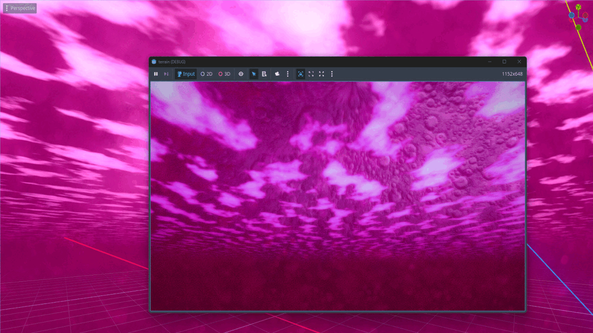
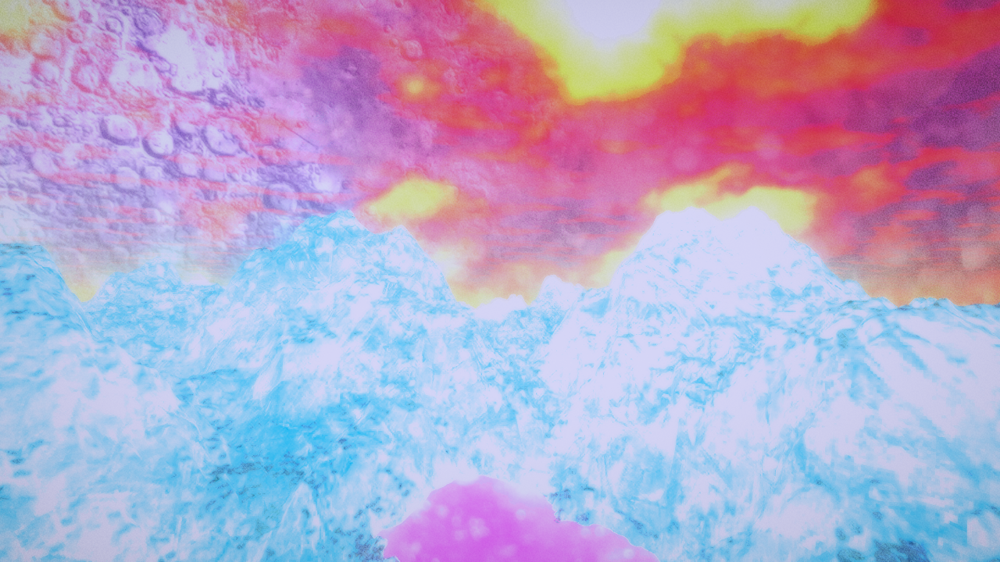
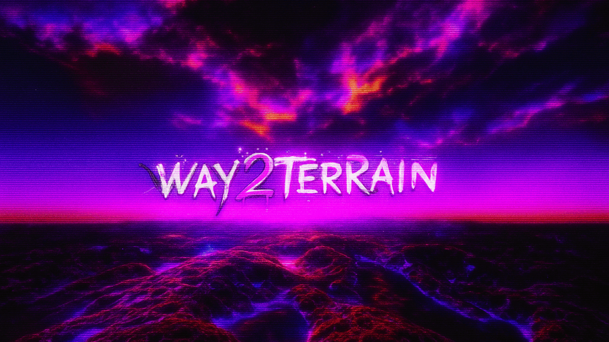

WAY2TERRAIN
About Project
The Dirt Jam was a month-long event by Acerola
that encouraged exploring graphics and shader programming in Godot.
Instead of relying on built-in tools, I worked directly with low-level rendering concepts, learning how they shape visuals.
This is a technical project — see the Glossary if any terms are unfamiliar.
GitHub | Itch.io | Technical PRs
Highlights
- Distance Fog
- Texture Mapping
Intro
The goal was to improve the base class, even if only slightly. The idea was to learn how terrain generation works — from creating the data to rendering it.

Methods for creating the terrain data range from hand sculpting landscapes in ZBrush or Blender. You can't have one without the other. If you can generate terrain data but can't see it, then the data is useless. And if you can render it but don't have any data, then all you have is a flat plane.
Development
I began by studying the source code's structure and comments. From there, I gradually added about 6-7 features — some were purely visual, others focused on tooling.
Rendering Fog - Light to Dense

Distance Fog was the first feature I added. It gives the scene a sense of depth and atmosphere, by making distant terrain blend gradually into the background.
Alongside fog, I also tackled other beginner-friendly graphics challenges: Shader Includes, Level of Detail (LOD), and improvements to the Lighting model.
Example Scene with Fog + Lighting

This mockup shows all of these features combined. I also experimented with post-processing (image effects) to add polish.
Next came a much harder task: Texture Mapping. Texture mapping is the process of covering terrain with different materials (grass, rock, snow) depending on slope or height. After four failed approaches, I reached out for guidance — and eventually implemented a working version.

Here you see 4 different textures applied to the terrain.
If you want to see the technical details of each feature, here are the individual pull requests (code change logs): Distance Fog, Shader Include, Level of Detail, Lighting, PCG3D, Water Shader.
Conclusion
This project was my crash course into graphics programming.
Where I learned about concepts such as:
-
GPU Data Alignment
Generating Terrain Data
Rendering Terrain Data
Compositor Effects (Godot)
Graphics APIs (Vulkan, SPIR-V)
To make sure I really understood GPU memory alignment, I came up with my own analogy:
“Think of UBO memory like an inventory grid.
Each data type has its own slot size, and a row can only hold 4 slots.
Bigger items (like vec3 and vec4) get VIP spots at the start of the row,
and smaller items fill in the gaps.
If the order changes on the CPU side, you have to re-pack the layout to match on the GPU side.”
Image Source: Kris & Jen
Gallery
These experiments show the atmospheric and stylistic directions I explored before the final version.
Cloud experimentation

Glacial peaks at sunset

Moodboard: Cloud Rap & Underground inspirations

Logo variations

Final Showcase
Glossary
- CPU: The “brain” of the computer. Handles general tasks and logic, but is slower at graphics.
- GPU: Specialized hardware for rendering images and running parallel calculations, crucial for games and 3D visuals.
- Shader: A small program that runs on the GPU to control how objects look — for example, their colors, lighting, or surface effects.
- Uniform: A shared setting that stays the same across many pixels or objects, like a “global color” all shaders can use.
- Buffer: A block of GPU memory used to store data (numbers, positions, or settings) so shaders can access it quickly.
- Uniform Buffer Object: A “box of shared settings” (colors, lights, camera info) that multiple shaders can open and use at the same time.
- Data Alignment: How data is arranged in computer memory, so it fits the “slots” the hardware expects. Proper alignment makes reading and writing faster, while misaligned data can waste memory or slow performance.
- Texture Mapping: Applying a 2D image (a “texture”) onto a 3D surface to add detail, like grass, rock, or water.
- Low-level: Similar to working directly with raw wood and nails instead of IKEA furniture. You get more control, but it takes more effort.
- PR (Pull Request): A way of proposing changes in version control (like GitHub), used to review and merge code contributions.